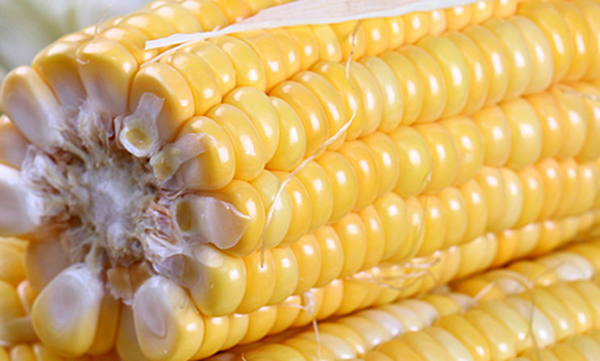

原文出处:本文转载自中药大全网。
原文连接:https://www.daquan.com/post/11038.html
原文连接:https://www.daquan.com/post/11038.html
玉米轴又称罐泰子、玉米芯、包谷心，生长在全国各地，世界所有的热带和温地均有栽培，玉米被称为五谷杂粮，吃了对人体有好处，那么玉米轴的功效与作用有哪些呢，下面我们来了解玉米轴。
玉米轴功效与作用有哪些
1、健脾利湿
玉米轴具有健脾利湿的作用，对于脾胃虚、湿气重的人，可以用玉米轴煮水服用，可以保护脾胃，同时有利湿的作用，而且味道甘甜，可解渴。
2、治消化不良
小儿消化不良，或者成人消化不良，用玉米轴煮水饮用克缓解症状，对于腹胀、嗳气等症状也有所缓解，每天服用3次即可。对于小儿中毒性引起的消化不良，用1斤玉米轴、4两石榴皮，烘干然后研磨成粉，加入1500毫升的水煎熬，每天3次，1岁用10毫升，2岁用20毫升，每增加一岁年龄增加10毫升。
3、治水肿、脚气

玉米轴有消水肿的功效，容易水肿的人群可以用玉米轴煮水喝，具体的做法为60克玉米轴，30克枫香果熬水，然后内服。这个方子同样可以用来治疗脚气。
4、治疗尿道炎
玉米轴可以治疗尿道炎，适用于尿频、尿急、尿道灼痛的症状，具体做法为用60克玉米轴、60克玉米根煮水，然后去渣，加入适量的白糖，一天2次。
5、治疗肠炎

玉米轴克治疗肠炎、痢疾等症状，具体的用法为将玉米轴90克，黄柏粉90克，研磨成细分，然后温水服用，每天3次，每次3克。
6、口舌糜烂
玉米轴还可以解小儿夏季热，和口舌糜烂的症状，具体用法将玉米轴熬水，加入少量的冰糖，即可食用，夏季每天给小儿服用2次。
结语：玉米轴的功效为健脾利湿，同时有治疗消化不良、水肿、脚气、尿道炎、肠炎、口舌糜烂等作用。